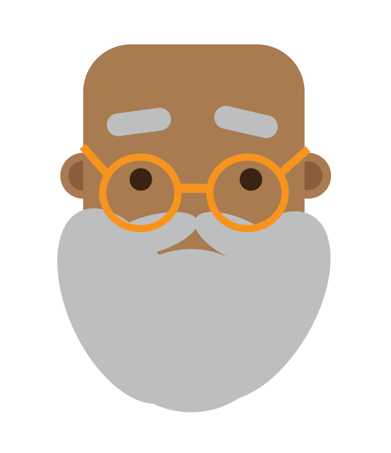

Oda Tillman, Sven Herman Holmsen, Maja Meland, Philip Tinius Hansen Crome, Dag Hara
18. september 2020
Vår klient KLPP. er en frisørkjede. Vi ble kontaktet av Johannes Haar med en forespørsel om å lage en nettside for frisørkjeden. Johannes Haar miste håret i veldig ung alder, men forsto likevel tidlig at det var hår som var hans lidenskap. Frem til nå har han jobbet som stylist i New York, men nå har han kommet tilbake til Norge. Målet hans er å starte opp en frisørkjede i Trondheim, hans hjemby. I denne bedriften er han daglig leder og stylist. I oppstartsfasen er det en del organisatorisk arbeid som gjør at han trenger litt ekstra hjelp til å komme i gang. Derfor har vi fått i oppdrag å lage en nettside for KLPP. som skal hjelpe han med å promotere frisørkjeden.
Som en nyoppstartet frisørkjede har KLPP. behov for et nettsted som kan lokke inn potensielle kunder ved hjelp av et oversiktlig brukergrensesnitt og fengslende design. På siden skal kunder lett kunne bestille timer, få informasjon om lokasjoner og frisører, samt studere porteføljen til de forskjellige frisørene. KLPP. er en ungdommelig og grensebrytende frisør, med fokus på høy kvalitet og dermed en relativt høy pris. Dette skal reflekteres i designet og brukervennligheten på nettsiden. Johannes Haar har tidligere jobbet for et high-end styling studio i New York, og vet derfor hvordan man selger kvalitet. Disse erfaringene medfører at han har spesifikke ønsker for hvordan websidens design utformes. Stikkord for designet er “sharp, clean og minimalistisk”. I tillegg er Johannes tilhenger av motebegrepet “less-is-more”, og det vil han at nettsiden også skal reflektere.
Brukergruppen for nettsiden er i hovedsak de som ønsker en behandling på håret. Det kan i utgangspunktet være alt fra barn til eldre mennesker, men vi ser for oss at dette skal være en nettsiden skal brukes av voksne mennesker. Det viktigste med nettsiden vil være å kunne booke time og finne ut hvor de ulike salongene befinner seg i byen.
Tekster her
Tekster her